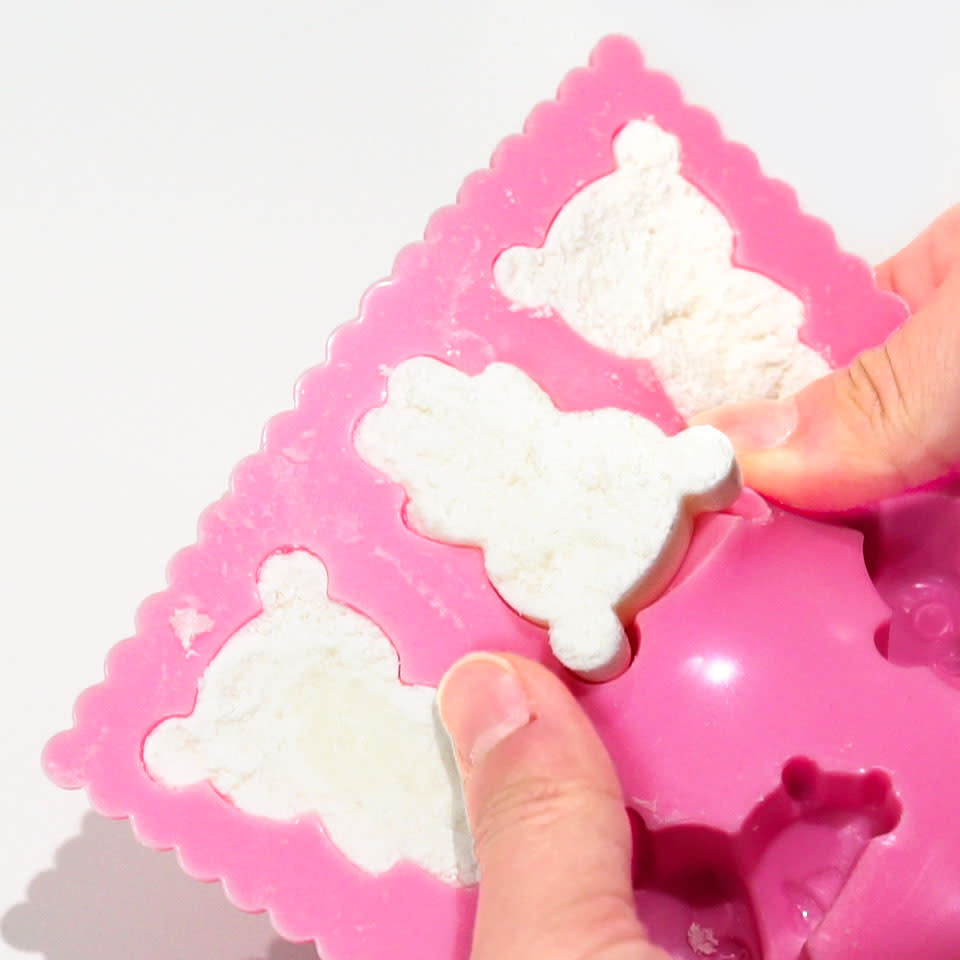
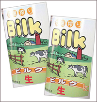
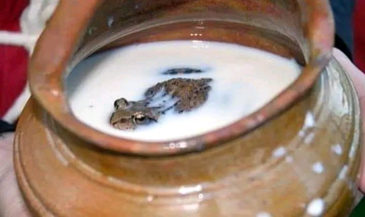

완전식품 우유의 영양
우유는 칼슘, 단백질, 비타민 D, 비타민 B12, 칼륨 등 필수 영양소가 풍부하게 들어있어 '완전식품'으로 불린다. 특히 뼈와 치아 건강에 중요한 칼슘의 최고의 공급원 중 하나!!
또한, 우유에 포함된 단백질은 근육 성장과 회복에 도움을 주며, 트립토판 성분은 숙면을 돕는 효과가 있다.
그렇지만 건강에 좋다 좋지 않다, 나쁘다 나쁘지만은 않다 우유는 사람을 포악하게 만든다 기타 등등 여러 구설수가 있는 역사가 오래된 음료. 우유 많이 사랑해주세요. 그렇지만 환경 오염 등 여러 문제가 있으니 너무 많이 사랑하지는 말아주세요.
인류와 함께한 우유의 역사
인류가 우유를 섭취하기 시작한 것은 기원전 6000년에서 4000년 사이, 농경과 목축이 시작되면서부터다. 사실 30만년에 걸친 전체 인류사적 관점으로 보면 우유의 역사는 새발의 피다.
초기에는 소, 양, 염소 등을 가축화하여 그 젖을 이용했는데, 사실 균질화되지 않은 생우유는 세균 감염 등의 이유로 먹고 죽는 일이 허다하다. 남의 젖을 함부로 먹지 맙시다.
19세기 루이 파스퇴르가 저온 살균법을 발명하고 나서부터 안전한 우유 유통이 시작되었다. 우리가 감염의 위험 없이 마트에서 손쉽게 우유를 접할 수 있는 것은 그의 공이 크다. 위의 사진이 루이 파스퇴르.
유아기가 지났는데도 젖을 먹는 동물은 포유류 중(사실 젖은 보통 포유류에게서만 나온다)인간이 유일하다!!! 보통은 안 그런다.
왜 굳이굳이 다른 동물의 젖을 먹게 되었을까?
BC 2350년 경에 그려진 것으로 추정되는 이집트 벽화. 소의 젖을 짜고 있다.
우유에 들어있는 젖당은 유아기가 지나면 보통 소화가 불가능하다. 유아일 때만 젖당을 분해하는 효소를 분비하기 때문. 소화도 불가능하고 새끼를 낳은 동물이 있지 않으면 구할 수 없는 다른 동물의 젖을 왜 굳이굳이 먹게 되었을까?
젖을 먹는 것은 가축을 죽이지 않고 칼로리를 섭취할 수 있는 방법이다. 깨끗한 식수를 구할 수 없는 지역에서는 가축의 젖이 유용한 수분 공급의 원천이라는 가설도 유력하다. (다만 살균되지 않은 생우유를 잘못 섭취했을 경우 심하면 죽는다!!!) 아무튼 수분 섭취가 어려운 지역에서는 이런 부작용쯤은 감내했다는 이야기가 있다.
덤으로 목축을 하는 사람들은 탄저병이나 설사병에 자주 노출되는데, 우유를 섭취했을 경우 해당 질병에 면역력을 제공했을 수도 있다는 이야기도 있다.
농장과 고양이, 고양이와 농장

보통 젖소 농장에는 고양이가 함께 산다. 시골 농장에서는 고양이가 자주 출몰하는데, 우유를 얻어먹기 위해서다!! 사람을 통해 우유를 맛본 고양이들은 젖을 짤 때마다 주위에 어슬렁거리다가 우유를 한입씩 얻어먹는다. 흔하게 볼 수 있는 광경이라고 한다.
히틀러와 우유의 관계
아돌프 히틀러는 스스로를 채식주의자라고 주장했으며, 일반적인 육식뿐 아니라 우유와 유제품도 극도로 꺼린 것으로 알려져 있다. 그는 우유를 “아이 같은 음료”라고 경멸적으로 표현했고, 실제로 식단에서도 우유를 철저히 배제했다는 증언이 있다. 일각에서는 그가 유당불내증을 앓았을 가능성을 제기한다.
바이마르 공화국 시절 그와 가까이 지낸 인물들의 기록에는 그가 종종 복통을 호소하고, 장 문제가 있었다는 내용도 보인다. 알란 불럭의 《Hitler: A Study in Tyranny》와 같은 역사 서적에 언급된 이러한 사실은, 우유에 대한 개인적 혐오가 단순한 취향 이상의 생리적 이유일 수도 있다는 추정을 가능케 한다.
요약하자면, 히틀러는 유당불내증이 있었어서 우유를 혐오했다고 할 수 있다! 유럽인들에게서도 유당불내증은 종종 찾아볼 수 있다.
미디어 산업과 우유의 관계
우유는 주로 어린아이가 먹기 때문에, 다 큰 성인인데도 우유를 먹으면 이상한 사람이라는 이미지가 있다. 이때문에 영화산업은 이를 적극적으로 이용한다!! 보통 영화나 애니메이션에 등장하는 흰우유를 마시는 성인은 빌런이거나, 어딘가 미성숙한 성인으로 묘사된다.
영화 문법에서 성인이 마시는 우유는 내면의 미성숙함이나 어딘지 이상한 어른의 모습을 상징한다. 술집에서 성인이 주문하는 우유는 주문자의 내면과 외면의 불일치를 말하는 전통적 문법이라 볼 수 있다.
해당 장면은 영화 <레옹>(1994)의 일부분이다. 사람을 죽이고 흰우유를 마시는 장면에서 나름의 순수한 내면을 지키고 있는 레옹을 만날 수 있다.
영화 <미스트>(2007)의 광기를 담당하고 있는 카모디에서도 유사한 부분을 확인할 수 있다. 이 경우에는 순수한 내면이라기보다는 이상한 사람 쪽에 더 가깝다.
<시계태엽 오렌지>(1971)의 알렉스 드라지, <노인을 위한 나라는 없다>(2007)의 안톤 쉬거 등의 모습에서도 이와 같은 '우유 문법'을 확인할 수 있다.
우유가 마약이라는 주장을 담은 시위가 발생했다
2006년 미국에서 동물권 단체 PETA는 “우유는 해롭다(Milk is Deadly)”는 캠페인을 벌이며, 우유가 건강과 동물복지에 해롭다는 메시지를 전달했다. 이 과정에서 "우유는 마약이다"라는 도발적인 문구가 등장했으며, 일부 시위에서는 우유 대신 대체유를 마시거나 흰색 페인트를 뒤집어쓰는 퍼포먼스도 진행됐다.
이 캠페인은 많은 관심을 끌었지만, 과도한 표현과 비과학적인 주장으로 비판도 받았다. PETA는 이후에도 ‘Got Milk?’ 광고를 패러디한 여러 포스터를 제작하며 지속적으로 논란을 일으켰다.
1920년대 미국과 유럽에서는 우유가 약국에서 판매되었다!
20세기 초, 특히 1920~30년대 미국과 유럽에서는 비타민 D 결핍이 구루병 등의 원인으로 지목되며, 이를 예방하기 위해 "강화 우유(fortified milk)"가 개발되었다.
당시 이 우유는 단순 식품이 아니라 건강 보조 식품 또는 의약품처럼 인식되었으며, 약국에서 판매되기도 했다. 일부 마케팅 자료에는 “튼튼한 뼈를 위한 약 같은 우유”라는 문구가 쓰이기도 했다. 이는 당시 영양소 강화 식품의 사회적 위상을 보여주는 사례로도 해석된다.
그러나 지금은 약국에서 드링크류를 제공하는 경우 불법이다. 이제는 찾아볼 수 없는 관경. 다들 약국에서 우유를 갑자기 무료로 제공하는 경우 긴장하도록 하자.
우유로 플라스틱을 만들 수 있다는 사실
1900년대 초 유럽에서는 우유 속 카세인 단백질을 화학적으로 응고시켜 만든 '갈랄리스(Galalith)'라는 플라스틱이 개발되었다. 이 소재는 단추, 머리핀, 빗, 펜촉, 장식품 등에 널리 사용되었으며, 천연 고무나 셀룰로이드보다 내열성과 강도가 뛰어나 사랑받았다. 그러나 제2차 세계대전 이후 석유 기반 플라스틱이 등장하면서 상업적 생산은 중단됐다. 현재도 일부 복각품이나 예술 작품에 활용되는 경우가 있다.

지금은 보통 사용하지 않으며, 어린이들을 위한 과학 실험 용으로 주로 사용된다. 우유를 끓여서 플라스틱으로 만들어보는 것 자체가 어린이들을 위한 실험의 일부. '우유 플라스틱 만들기', '바이오 플라스틱 만들기' 등의 이름으로 통용된다.
실험은 간단하다. 우유와 끓일 냄비, 거름종이 혹은 커피 필터, 레몬즙과 굳힐 틀이 있으면 준비 완료!
❶ 우유를 약불에 가열한다.
❷ 가열한 우유에 식초를 넣는다.
❸ 우유가 뭉치면 건져서 물기를 제거한 뒤 틀에 넣어 굳힌다.
우유 플라스틱 만들기 완성!
우유를 쓰지 않고 개발한 치즈!
최근 바이오 기술 발전으로 우유 없이도 진짜 우유 단백질을 만드는 기술이 상용화되었다. 미국의 스타트업 Perfect Day와 독일의 Formo 등은 유전자 조작 효모에 카세인·웨이 단백질을 생산하게 해, 동물 없이도 실제 우유의 성분을 생성한다. 이를 통해 만든 치즈는 식물성 대체품과 달리 진짜 치즈 같은 식감과 맛을 구현할 수 있으며, 미국과 유럽 일부 지역에서는 슈퍼마켓과 레스토랑에서도 만나볼 수 있다. 이는 동물복지, 환경, 알레르기 대응 등 다양한 이유로 주목받는 신식 식품 기술이다.
물론 우유를 유사하게 구현한 식물성 치즈도 유통 중이다. 외에도 다양한 방법으로 랩실이나 동물을 학대하지 않고 만들어내는 유제품 혹은 대체유 연구가 활발하다. 언젠가는 축산업이 사라지고 고통 없이 만들어내는 식재료가 더 보편적이 될수도.
피부미용에 과연 우유가 좋을까?
우유는 피부미용과 관련해서 매체에 자주 등장하는 편이다. 관련 제품들도 많이 찾아볼 수 있다. 그런데 딱히...좋지 않다.
‘우유를 마시면 피부가 좋아진다’는 민간 신념과 달리, 일부 사람에게는 피부 트러블을 유발할 수 있다는 연구들이 있다. 사실 꽤나 많은 정도이다.
특히 저지방 또는 탈지 우유는 인슐린 유사 성장인자(IGF-1)의 농도를 높일 수 있는데, 이는 피지선의 활동을 촉진하고 여드름과 관련된 염증 반응을 유도할 수 있다. 여드름 피부를 가진 청소년이나 성인 여성의 경우, 저지방 우유와 피부 트러블 사이에 상관관계를 보인 연구들이 다수 존재한다.
물론 모든 사람에게 나타나는 반응은 아니다. 하지만 여드름이 자주 나고, 그 원인을 알 수 없다면 우유 섭취를 줄여보고 경과를 살펴보는 것도 유의미한 방법이 될 수 있다. 실제로 피부과에서는 유제품 섭취를 권장하지 않는다. 좋은 피부를 유지하고 싶다면 우유를 끊는 것이 방법일 수 있다.
상한 우유 사건
플로리다에서 상한 초코우유를 폭발물로 오인한 사건이다.
미국 플로리다의 한 폐건물에서 이상한 ‘틱틱’ 소리가 들린다는 신고가 접수되었고, 현장에는 폭발물 해체반까지 출동했다. 건물 안에서 발견된 것은 다름 아닌 오래된 초코우유 팩. 유통기한이 훨씬 지난 우유가 내부에서 발효되면서 가스를 생성해 팩이 부풀었고, 그 팽창음이 사람들에겐 위험한 폭발물로 들렸던 것이다. 소동은 해프닝으로 마무리됐지만, "발효된 우유가 폭탄보다 무섭다"는 농담이 인터넷에서 퍼지며 밈화되기도 했다.
...믿거나 말거나!
사람 유전자를 이식한 우유가 개발된 사건이다.
중국의 대학 연구팀은 인간 유전자를 삽입한 유전자조작 젖소를 통해 사람의 모유 성분과 유사한 우유 생산에 성공했다고 발표했다. 이 우유에는 면역 기능을 강화하는 락토페린과 리소자임이 포함되어 있었으며, 실제로 시제품까지 만들어졌다. 연구진은 이 우유가 조산아나 면역력이 약한 유아에게 도움이 될 수 있다고 주장했지만, 전 세계적으로 윤리 논쟁이 일었다. ‘생명공학의 미래’라는 평가와 ‘유전자 교란의 위험’이라는 우려가 동시에 존재했던 사건이다.
말하자면 사람 젖을 만드는 젖소가 만들어졌다고 할 수 있다. 국내에서는 인간의 유전자를 지닌 젖소 '보람이'가 태어났었다. 유전자 편집, 복제 기술을 이용해서 지방 성분을 끌어올리는 등 다양한 시도가 이뤄졌었다. 유전자 조작 우유의 탄생이다.
그러나 경제성이 없다는 이유와 더불어 여러 윤리적 이유로 잠정 중단 된 상태.
우유는 고기다!
미국의 한 고등학생이 급식에서 제공된 우유가 자신의 비건(완전 채식) 신념에 위배된다며 학교를 상대로 소송을 제기했다. 학생 측은 "우유도 동물로부터 채취된 식품이므로 식물성 식단에 반한다"고 주장했고, 법원은 이를 받아들여 "우유는 고기처럼 동물성 식품에 해당한다"고 판결했다. 이 판결은 미국 내 비건 식단의 권리 인정을 확대하는 계기가 되었으며, 식품의 정의에 대한 논의를 촉발시켰다.
실제로 완전 채식, 비건을 지향하는 사람들은 유제품 또한 섭취하지 않는다. 동물성 식재료이기 때문. 대체품으로는 오트밀 우유, 두유, 아몬드유 등의 식물성 우유 혹은 대체유가 있으며, 코코넛 밀크를 이용하기도 한다. 요새는 코코넛 오일 등을 이용한 비건 버터, 스프레드 등의 레시피도 활발히 개발되는 중이다. 더 다채로운 채식주의 식단을 찾아볼 수 있게 되었다.
비건 버터의 경우, 그냥 팜유를 굳혀 만든 싸구려 마가린을 고급화해서 비건 버터라고 부른 경우가 왕왕 있으니 성분표를 잘 보고 코코넛 오일 등이 많이 함유된 제대로 된 비건 버터를 구매하는 것이 중요하다.
어쩌다보니 우유가 화재를 진압!
캐나다의 한 고속도로에서 우유를 실은 유제품 운반 트럭에서 큰 화재가 발생했다. 불은 빠르게 번졌지만, 트럭 내부의 우유 팩이 폭발하면서 내용물이 퍼졌고, 이 액체가 불길의 일부를 억제하는 효과를 냈다. 현장에 출동한 소방관은 “우유가 아니었으면 트럭 전체가 전소됐을 것”이라며 우유의 뜻밖의 소방 기능에 놀라움을 표했다. 물리적으로는 가연성 온도를 낮추는 역할을 했던 셈이다.
비슷한 한국의 사건으로는 제주 우유공장 창고에 화재가 발생했던 적이 있다. 비교적 큰 불은 아니었다.
🥛🍺 우유로 만든 맥주 ‘Bilk’ 출시!!!

2000년대 중반, 낙농 소비 감소로 위기를 맞은 일본 홋카이도. 여름철마다 우유 소비가 급감했고, 공급 과잉으로 인해 대량의 우유가 폐기될 처지에 놓였다. 이를 해결하기 위해 지역 행정기관과 라쿠게이 마을의 작은 양조장이 협업했다. 남는 우유를 활용해 새로운 상품을 만들자는 아이디어에서 ‘Bilk’가 탄생했다. 2011년에 출시.
Bilk는 이름 그대로 Beer(맥주)와 Milk(우유)를 합쳐 만든 합성어다. 맥주 양조 시 우유를 약 30% 비율로 혼합하고 발효 과정을 거쳐 제조한다. 단백질과 지방이 풍부한 우유 특성상 일반 맥주와는 다른 양조 방식이 필요했다. 발효 공정에서는 특별히 조정된 효모와 온도 관리를 통해 안정된 맛과 향을 구현했다. 알코올 도수는 약 5% 정도로, 일반 맥주와 비슷한 수준을 유지한다.
Bilk는 처음에는 지역 한정 맥주로 판매되었다. 독특한 콘셉트 덕분에 입소문을 타며 관광객과 블로거들 사이에서 주목을 받았다. 홋카이도를 찾은 관광객들이 선물용으로 구매하거나 SNS에 올리면서 점점 인지도가 높아졌다. 이후 일부 온라인 쇼핑몰에서도 한정 판매를 시작했고, ‘홋카이도에서만 만날 수 있는 특이한 맥주’로 자리 잡았다.
그러나 지금은 만나볼 수 없다..
단종되었기 때문.
외계인에게 납치된 이후로 우유만 먹게 되었다는 이야기..!
영국의 한 남성이 “외계인에게 납치되었다”고 주장하며 세간의 주목을 받았다. 그는 사건 이후 자신이 신체적으로 변화됐으며, 오직 우유만 마셔야 한다는 충동을 느끼게 되었다고 말했다. 실제로 그는 몇 년간 커피, 주스, 심지어 물도 거부하고 우유만 마시는 식생활을 유지했으며, 지역 방송에 다수 출연해 화제를 모았다. 정신과 전문의들은 심리적 외상 반응일 수 있다고 분석했지만, 그는 끝까지 외계인의 “식이 프로그램”이 자신에게 적용된 것이라 주장했다.
정말 오래된 이야기이다..
믿거나 말거나...
우유에 개구리를 넣으면 신선도 유지

19세기 러시아와 핀란드 농촌 지역에서는, 냉장 기술이 없던 시절 ‘우유통에 살아있는 개구리’를 넣는 방식이 전해졌다. 전해지는 설문에 따르면, 농부들은 개구리가 우유를 물리적으로 저어주고, 체온 차로 우유를 더 차갑게 만든다고 믿었다고 한다.
또한 일부 민간에서는, 개구리 피부의 항균 페프티드(peptide)가 우유 속 세균 번식을 억제한다는 믿음도 있었으며, 이는 근거 있는 전통 경험으로 여겨졌다.
어쩌다가 개구리가 담긴 우유를 먹을 생각을 해봤는지는 잘 모르겠지만, 옛 사람들의 방법은 다양하고 신기한 것들이 많으니 한번 찾아보도록 하자.
실제로 2012~2013년, 모스크바 국립대 등 연구진은 러시안 브라운 프록(Rana temporaria)의 피부에서 76개 이상의 항균 펩티드를 발견했다.
실험 결과, 이 중 일부 펩티드는 살모넬라(Salmonella) 및 황색포도상구균(Staphylococcus aureus)에 대해 기존 처방 항생제와 비교해 유사한 억제 효과를 보였다.